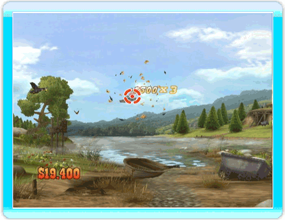
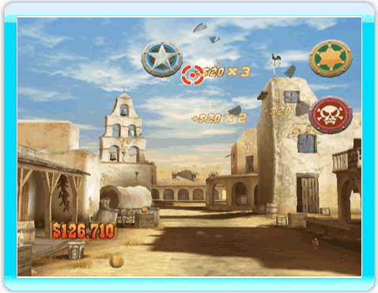
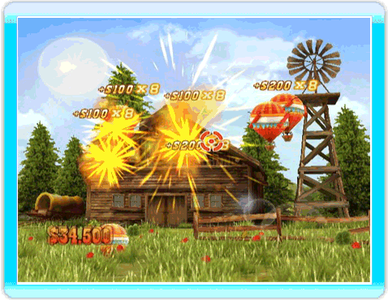
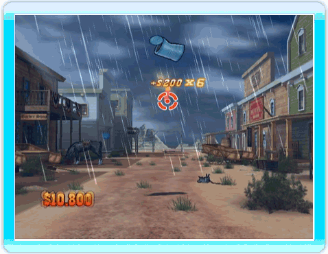
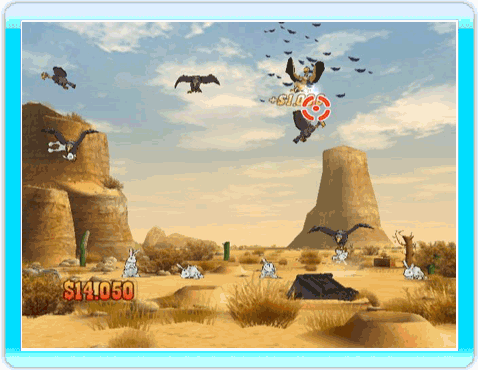
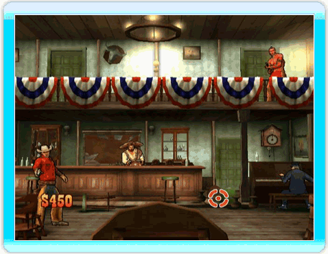
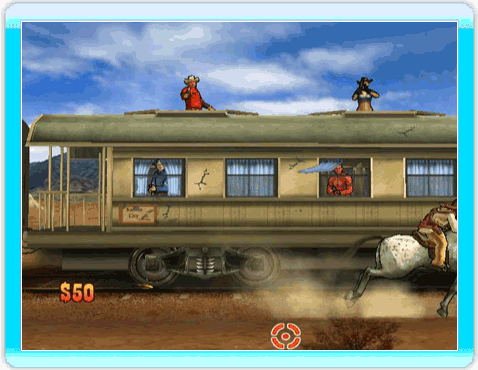

24 |
Schießspiele |
 |
Man kann oft Sombreros durch die Luft fliegen sehen. Um deine Reflexe zu testen und etwas Geld zu verdienen, sollst du sie abschießen, wenn sie an dir vorbeifliegen. Manchmal musst du sogar alle abschießen. TIPP ⇨ Je schneller du sie abschießt, desto mehr Geld bekommst du!  Schieße auf die Zielscheiben, sobald sie erscheinen. Die goldenen Zielscheiben bringen mehr Geld, aber nimm dich vor den roten in Acht: Triffst du diese, verlierst du Geld! TIPP ⇨ Meide die roten Zielscheiben. Achtung: Manche Zielscheiben verschwinden sehr rasch oder drehen sich um und werden zu roten Zielscheiben.  Möchtest du einfach nur etwas Spaß haben? Diese Luftballons sind die perfekten Ziele. Aber pass auf: Manche von ihnen sind mit einer Dynamitladung versehen! Nutze Explosionen zu deinem Vorteil. TIPP ⇨ Du gewinnst mehr Geld, wenn du mehrere Luftballons derselben Farbe in Folge abschießt.  Was war der liebste Zeitvertreib der Bewohner des Wilden Westens? Auf Dosen zu schießen natürlich! Und als ob das nicht schon genug wäre, musst du mit steigendem Niveau Dosen für eine bestimmte Zeit in der Luft halten! TIPP ⇨ Halte die Dosen so lange wie möglich in der Luft, um mehr Geld zu gewinnen, aber nimm dich vor den verrückten Erfindern in Acht! Der Rauch nimmt dir die Sicht und macht es dir schwerer, die Dosen zu treffen.  Kaninchen sind so niedliche und unschuldige Kreaturen. Du kannst nicht einfach dastehen und zusehen, wie die Raubvögel sie greifen. Pass gut auf, denn ihr Flugmuster ist nicht leicht vorherzusehen. TIPP ⇨ Die Kaninchen können auch von unten angegriffen werden, behalte also den Boden im Auge.  Banditen im Saloon? Als Marshall musst du in der Stadt für Ruhe und Ordnung sorgen. Du musst schneller als die Banditen sein, damit sie dich nicht über den Haufen schießen! TIPP ⇨ Nimm dich vor dem großen Indianer in Acht. Wenn er dich erwischt, geht es dir schlecht.  Befreie den Zug von den Banditen. Schieße auf sie, sobald sie auftauchen. Du musst schneller als die Banditen sein, damit sie dich nicht über den Haufen schießen! TIPP ⇨ Ziele sorgfältig. Triff die Cancan-Tänzerin in Rot nicht, sonst verlierst du Geld.  |
 |
 |
 |